A knitted R Markdown document (preferably HTML) and the raw R Markdown file (as .Rmd) should both be submitted to Canvas by 11:59pm on the due date. These two documents will be graded jointly, so they must be consistent (i.e., don’t change the R Markdown file without also updating the knitted document). In the .Rmd file for Project 2, you can copy the first code-chunk into your project .Rmd file to get better formatting. Notice that you can adjust the opts_chunk$set(…) above to set certain parameters if necessary to make the knitting cleaner (you can globally set the size of all plots, etc). You can copy the set-up chunk in Project2.Rmd: I have gone ahead and set a few for you (such as disabling warnings and package-loading messges when knitting)!
Like before, I envision your written text forming something of a narrative structure around your code/output. All results presented must have corresponding code. Any answers/results/plots etc. given without the corresponding R code that generated the result will not be graded. Furthermore, all code contained in our project document should work properly. Please do not include any extraneous code or code which produces error messages. (Code which produces warnings is fine as long as you understand what the warnings mean.)
Find one dataset with at least 5 variables (ideally more!) that you want to use to build models/test hypotheses. At least one should be categorical (with 2-5 groups, ideally; definitely fewer than 10) and at least two should be numeric (taking on more than 10 distinct values). Ideally, at least of your variables will be binary (if not, you will have to create one by discretizing a numeric or collapsing levels of a categorical). You will need a minimum of 40 observations (at least 10 observations for every explanatory variable you have, ideally 20+ observations/variable).
It is perfectly fine to use either dataset (or the merged dataset, or a subset of your variables) from Project 1. However, I might encourage you to diversify things a bit and choose a different dataset to work with (particularly if the variables did not reveal interesting associations in Project 1 that you want to follow up with). The only requirement/restriction is that you may not use data from any examples we have done in class or lab. It would be a good idea to pick more cohesive data this time around (i.e., variables that you actually thing might have a relationship you would want to test). Think more along the lines of your Biostats project.
Again, you can use data from anywhere you want (see bottom for resources)! If you want a quick way to see whether a built-in (R) dataset has binary and/or character (i.e., categorical) variables, check out this list: https://vincentarelbundock.github.io/Rdatasets/datasets.html.
This dataset explores the energy produced by each US state in the year 2009. The energy produced is described by biomass, geothermal, solar, wind, hydro, HPS, coal, petroleum, gas, nuclear, and other. The states are separated into regions. This dataset was extremely robust, but I was interested in seeing the relationship between region of the US and the type of energy produced. The regions for this dataset are Alaska, California, Florida, Hawaii, Heartland, Mid Atlantic, Midwest, New England, New York, Southeast, Texas, and West. During the climate crisis, it is important to look to our shortcomings and our strengths. I aim to have a career in sustainable energy law, so it appealed to me to find a relationship between different types of energy production and their location in the US.
library(readxl)
Project2RawData <- read_xlsx("Project2RawData.xlsx")
glimpse(data)## function (..., list = character(), package = NULL,
lib.loc = NULL, verbose = getOption("verbose"),
## envir = .GlobalEnv, overwrite = TRUE)library(mvtnorm)
library(ggExtra)
glimpse(Project2RawData)## Rows: 51
## Columns: 14
## $ State <chr> "Alabama", "Alaska", "Arizona",
"Arkansas", "California", "Colorado", "Conne…
## $ Abbreviation <chr> "AL", "AK", "AZ", "AR", "CA", "CO",
"CT", "DE", "DC", "FL", "GA", "HI", "ID"…
## $ Region <chr> "Southeast", "Alaska", "West",
"Southeast", "California", "West", "New Engla…
## $ Biomass <dbl> 0.000, 0.000, 3291195.898, 4254.745,
159645.589, 1478309.688, 6062630.318, 5…
## $ Geothermal <dbl> 0.0, 0.0, 0.0, 0.0, 0.0, 0.0,
13022835.7, 0.0, 0.0, 0.0, 0.0, 0.0, 0.0, 1675…
## $ Solar <dbl> 0.000, 0.000, 0.000, 0.000, 13759.445,
0.000, 611763.387, 16530.477, 0.000, …
## $ Wind <dbl> 0.000, 0.000, 0.000, 3062.442, 9555.000,
0.000, 5764637.309, 2942132.635, 0.…
## $ Hydro <dbl> 0.00, 0.00, 11753493.37, 1204550.39,
6348462.99, 4195168.35, 27707085.47, 20…
## $ HPS <dbl> 0, 0, 0, 0, 169480, 100365, 144453, -108658,
5385, 0, 0, 0, 271988, 0, 0, 0,…
## $ Coal <dbl> 0.00, 0.00, 55659872.11, 566821.97,
39783825.82, 25075250.30, 1948279.09, 31…
## $ Petroleum <dbl> 0.000, 0.000, 163054.219, 1191884.181,
67337.470, 87673.592, 1638018.869, 15…
## $ Gas <dbl> 0.00, 0.00, 32369862.92, 3571100.82,
34852149.55, 11368417.10, 115749546.20,…
## $ Nuclear <dbl> 0, 0, 39716204, 0, 30661851, 15169966,
31734676, 0, 16657387, 0, 0, 29336059…
## $ Other <dbl> 0.000, 0.000, 7136.532, 0.000, 533.921,
24018.741, 440323.360, 33632.811, 71…library(mvtnorm); library(ggExtra)
df<-rmvnorm(1000,mean=c(0,0),sigma=matrix(c(1,.5,.5,1),ncol=2,byrow=T))
df<-data.frame(df)%>%rename(Y1=X1,Y2=X2)
p<-ggplot(df, aes(Y1,Y2))+geom_point(alpha=.5)+geom_density_2d(h=2)+coord_fixed()
ggMarginal(p,type="density",xparams = list(bw=.5), yparams=list(bw=.5))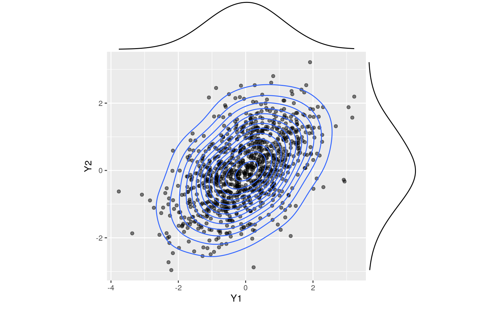
p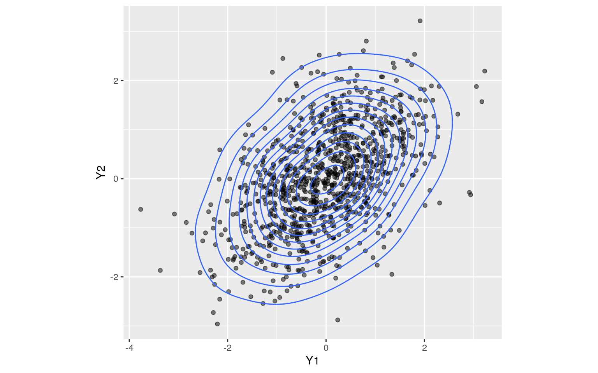
ggplot(Project2RawData,aes(x=Petroleum,y=Gas))+geom_point(alpha=.5)+geom_density_2d(h=2)+coord_fixed()+facet_wrap(~Region)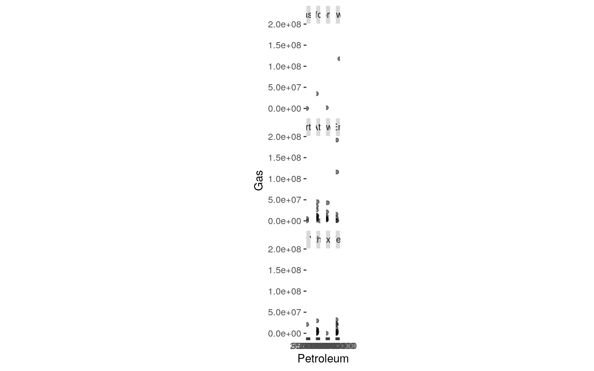
library(rstatix)
group<-Project2RawData$Region
DVs<-Project2RawData%>%select(Biomass,Geothermal,Solar,Wind,Hydro,HPS,Coal,Petroleum,Gas,Nuclear,Other)
man1<-manova(cbind(Biomass,Geothermal,Solar,Wind,Hydro,HPS,Coal,Petroleum,Gas,Nuclear,Other)~Region,data=Project2RawData)
summary(man1)## Df Pillai approx F num Df den Df Pr(>F)
## Region 11 2.4115 0.99549 121 429 0.5015
## Residuals 39summary.aov(man1)## Response Biomass :
## Df Sum Sq Mean Sq F value Pr(>F)
## Region 11 2.3041e+13 2.0947e+12 1.3496 0.2354
## Residuals 39 6.0529e+13 1.5520e+12
##
## Response Geothermal :
## Df Sum Sq Mean Sq F value Pr(>F)
## Region 11 2.4211e+13 2.2010e+12 0.5978 0.8188
## Residuals 39 1.4359e+14 3.6818e+12
##
## Response Solar :
## Df Sum Sq Mean Sq F value Pr(>F)
## Region 11 5.2756e+10 4795971016 0.5633 0.8461
## Residuals 39 3.3203e+11 8513707579
##
## Response Wind :
## Df Sum Sq Mean Sq F value Pr(>F)
## Region 11 1.0579e+14 9.6175e+12 1.0351 0.4358
## Residuals 39 3.6238e+14 9.2917e+12
##
## Response Hydro :
## Df Sum Sq Mean Sq F value Pr(>F)
## Region 11 1.3752e+15 1.2502e+14 0.824 0.6172
## Residuals 39 5.9169e+15 1.5172e+14
##
## Response HPS :
## Df Sum Sq Mean Sq F value Pr(>F)
## Region 11 4.9224e+11 4.4749e+10 0.4285 0.9338
## Residuals 39 4.0730e+12 1.0444e+11
##
## Response Coal :
## Df Sum Sq Mean Sq F value Pr(>F)
## Region 11 8.8662e+15 8.0602e+14 0.5982 0.8185
## Residuals 39 5.2551e+16 1.3475e+15
##
## Response Petroleum :
## Df Sum Sq Mean Sq F value Pr(>F)
## Region 11 7.6076e+13 6.9160e+12 3.7551 0.001045 **
## Residuals 39 7.1830e+13 1.8418e+12
## ---
## Signif. codes: 0 '***' 0.001 '**' 0.01 '*' 0.05 '.' 0.1
' ' 1
##
## Response Gas :
## Df Sum Sq Mean Sq F value Pr(>F)
## Region 11 2.2158e+16 2.0143e+15 2.1028 0.04368 *
## Residuals 39 3.7360e+16 9.5794e+14
## ---
## Signif. codes: 0 '***' 0.001 '**' 0.01 '*' 0.05 '.' 0.1
' ' 1
##
## Response Nuclear :
## Df Sum Sq Mean Sq F value Pr(>F)
## Region 11 2.9361e+15 2.6692e+14 0.5694 0.8415
## Residuals 39 1.8282e+16 4.6878e+14
##
## Response Other :
## Df Sum Sq Mean Sq F value Pr(>F)
## Region 11 6.2994e+12 5.7267e+11 8.6247 1.834e-07 ***
## Residuals 39 2.5896e+12 6.6399e+10
## ---
## Signif. codes: 0 '***' 0.001 '**' 0.01 '*' 0.05 '.' 0.1
' ' 1Project2RawData%>%group_by(Region)%>%summarize(mean(Biomass),mean(Geothermal),mean(Solar),mean(Wind),mean(Hydro),mean(HPS),mean(Coal),mean(Petroleum),mean(Gas),mean(Nuclear),mean(Other))## # A tibble: 12 x 12
## Region `mean(Biomass)` `mean(Geotherma… `mean(Solar)`
`mean(Wind)` `mean(Hydro)` `mean(HPS)`
## <chr> <dbl> <dbl> <dbl> <dbl> <dbl> <dbl>
## 1 Alaska 0 0 0 0 0 0
## 2 Calif… 159646. 0 13759. 9555 6348463. 169480
## 3 Flori… 138302. 0 0 0 0 0
## 4 Hawaii 4237764. 0 10225 0 244526. 0
## 5 Heart… 135941. 0 0 2079740. 997756. 0
## 6 Mid A… 877858. 217047. 16974. 571847. 2675851.
-139265.
## 7 Midwe… 897136. 0 9.62 1294472. 15365322. -56418.
## 8 New E… 2045800. 2170473. 101961. 4842160.
11711597. 24076.
## 9 New Y… 914529. 0 2438. 19150. 37117. 0
## 10 South… 786730. 0 0 1743059. 919449. -239365.
## 11 Texas 5775. 0 0 392308. 4319205. 0
## 12 West 1215725. 0 0 166053. 4294727. -27748.
## # … with 5 more variables: `mean(Coal)` <dbl>,
`mean(Petroleum)` <dbl>, `mean(Gas)` <dbl>,
## # `mean(Nuclear)` <dbl>, `mean(Other)` <dbl>The null hypothesis for a MANOVA test states that for each numeric response variable, the mean of all groups (regions of the US) are equal. The alternate hypothesis states that for at least 1 measure of energy produced, at least 1 region mean differs. This test is appropriate when we have multiple response variables (ie multiple types of energy produced in a year) to see if any differ by the categorical explanatory variable of US region. The assumptions for MANOVA are extensive. Random sampling, independent observations, multivariate normality of DVs, homogeneity of within group covariance matrices, linear relationships among DVs, no extreme univariate or multivariate outliers, and no mukticollinearity are required. This is a lot of assumptions, and it’s unlikely that all of them are met in this case. Again, the regions for this dataset are Alaska, California, Florida, Hawaii, Heartland, Mid Atlantic, Midwest, New England, New York, Southeast, Texas, and West. I decided to focus on 6 numeric variables: wind, hydro, petroleum, solar, coal, and gas.
The overeall manova test was not significant. I was shocked by this! If everything had been significant, I would have had 11 response variables for 12 groups. That would mean 1 MANOVA, 11 ANOVA, and 12 t-tests, or 24 tests total. I included the code for the first steps to be safe.
Project2RawData<-na.omit(Project2RawData)
Project2RawData$Biomass%>%sort## [1] 0.000 0.000 0.000 0.000 0.000 890.379 4254.745
5774.833
## [9] 8453.340 17433.377 29266.424 50527.669 56857.101
60163.014 100425.453 138301.819
## [17] 152776.313 159645.589 175257.730 192385.379
263427.996 294673.699 373142.927 380464.045
## [25] 477948.276 539982.458 599703.453 751004.489
752801.224 753801.138 896430.522 914529.032
## [33] 1089622.843 1259418.764 1382742.694 1397117.988
1437051.358 1478309.688 1543616.996 1733560.686
## [41] 2019958.579 2081064.256 2143017.095 2250155.244
2465738.035 2493390.121 2931302.106 3291195.898
## [49] 3637794.872 4237764.241 6062630.318mean(Project2RawData$Biomass)## [1] 1040898samp1<-sample(Project2RawData$Biomass,replace=T)
sort(samp1)## [1] 0.000 0.000 0.000 0.000 0.000 0.000 0.000 0.000
## [9] 890.379 4254.745 4254.745 4254.745 5774.833
17433.377 17433.377 17433.377
## [17] 17433.377 17433.377 29266.424 29266.424 56857.101
60163.014 60163.014 60163.014
## [25] 100425.453 100425.453 138301.819 138301.819
138301.819 159645.589 263427.996 380464.045
## [33] 380464.045 477948.276 477948.276 599703.453
751004.489 1089622.843 1259418.764 1259418.764
## [41] 1397117.988 1437051.358 1733560.686 2143017.095
2250155.244 2493390.121 2493390.121 2931302.106
## [49] 2931302.106 3291195.898 3637794.872samp1## [1] 4254.745 3291195.898 5774.833 29266.424 751004.489
17433.377 1733560.686 599703.453
## [9] 0.000 477948.276 3637794.872 60163.014 2493390.121
0.000 0.000 56857.101
## [17] 0.000 477948.276 17433.377 100425.453 138301.819
138301.819 1089622.843 380464.045
## [25] 2250155.244 17433.377 380464.045 1437051.358
138301.819 159645.589 4254.745 0.000
## [33] 100425.453 2143017.095 0.000 1397117.988 890.379
29266.424 17433.377 0.000
## [41] 2931302.106 60163.014 2931302.106 1259418.764
1259418.764 263427.996 0.000 2493390.121
## [49] 60163.014 17433.377 4254.745mean(samp1)## [1] 683462.3means<-vector()
for(i in 1:5000){
samp<-sample(Project2RawData$Biomass,replace=T)
means[i]<-mean(samp)
}
quantile(means,c(0.025,0.975),na.rm=TRUE)## 2.5% 97.5%
## 708929.5 1395109.6ggplot()+geom_histogram(aes(means))+geom_vline(xintercept=quantile(means,c(.025,.975)))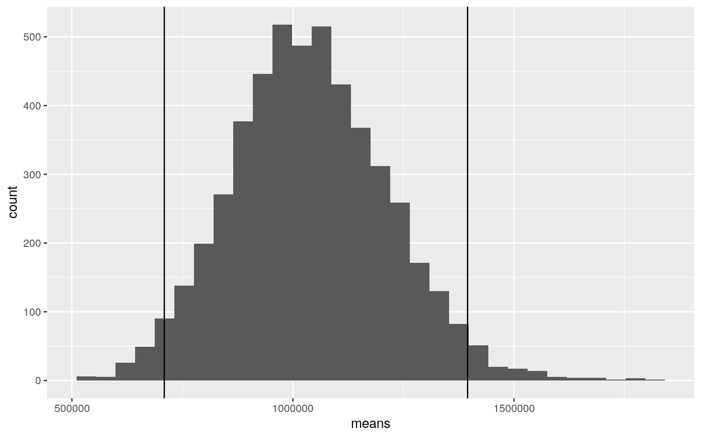
sd(means)## [1] 175697.3ggplot()+geom_histogram(aes(means))+
geom_vline(xintercept=mean(means)+c(-1,1)*sd(means))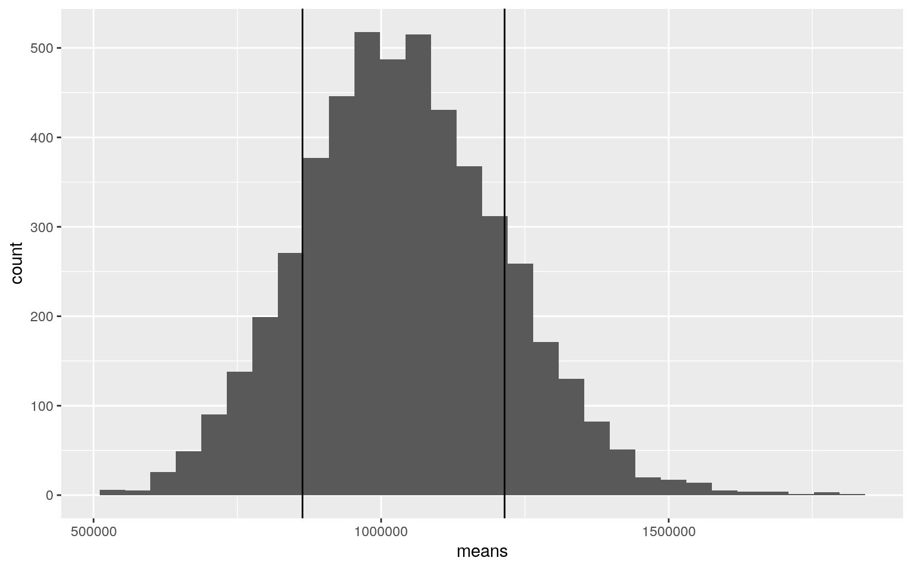
library(vegan)
dists<-Project2RawData%>%select(Biomass, Wind)%>%dist()
adonis(dists~Region,data=Project2RawData)##
## Call:
## adonis(formula = dists ~ Region, data = Project2RawData)
##
## Permutation: free
## Number of permutations: 999
##
## Terms added sequentially (first to last)
##
## Df SumsOfSqs MeanSqs F.Model R2 Pr(>F)
## Region 11 1.2883e+14 1.1712e+13 1.0801 0.2335 0.243
## Residuals 39 4.2291e+14 1.0844e+13 0.7665
## Total 50 5.5174e+14 1.0000The null hypothesis is that the true mean of biomass generated in the US by state does not differ from the mean of the biomass generated in this dataset from 2009. The alternate hypothesis is that the true mean of biomass does differ significantly from the mean in this dataset. The histogram above shows a normal distribution with the quantiles included. Our mean falls within the range of sd. We can conclude that it is representative of the true mean of biomass, so we fail to reject the null.
Project2RawData%>%ggplot(aes(Nuclear,Coal))+geom_point()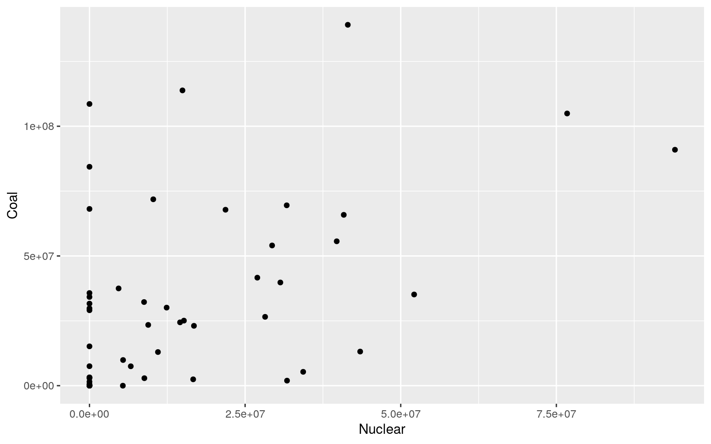
fit<-lm(Nuclear~Coal+Gas,data=Project2RawData);summary(fit)##
## Call:
## lm(formula = Nuclear ~ Coal + Gas, data =
Project2RawData)
##
## Residuals:
## Min 1Q Median 3Q Max
## -32104668 -9196531 -4756790 5235508 66357036
##
## Coefficients:
## Estimate Std. Error t value Pr(>|t|)
## (Intercept) 5.069e+06 3.525e+06 1.438 0.1569
## Coal 2.427e-01 7.638e-02 3.178 0.0026 **
## Gas 1.263e-01 7.759e-02 1.627 0.1102
## ---
## Signif. codes: 0 '***' 0.001 '**' 0.01 '*' 0.05 '.' 0.1
' ' 1
##
## Residual standard error: 17960000 on 48 degrees of
freedom
## Multiple R-squared: 0.2704, Adjusted R-squared: 0.24
## F-statistic: 8.894 on 2 and 48 DF, p-value: 0.0005179resCoal<-lm(Nuclear~Gas,data=Project2RawData)$residuals
resGas<-lm(Nuclear~Coal,data=Project2RawData)$residuals
coef(lm(resCoal~resGas))## (Intercept) resGas
## 1.043290e-09 9.154622e-01coef(lm(Nuclear~Coal+Gas,data=Project2RawData))## (Intercept) Coal Gas
## 5.068932e+06 2.427016e-01 1.262576e-01summary(fit)##
## Call:
## lm(formula = Nuclear ~ Coal + Gas, data =
Project2RawData)
##
## Residuals:
## Min 1Q Median 3Q Max
## -32104668 -9196531 -4756790 5235508 66357036
##
## Coefficients:
## Estimate Std. Error t value Pr(>|t|)
## (Intercept) 5.069e+06 3.525e+06 1.438 0.1569
## Coal 2.427e-01 7.638e-02 3.178 0.0026 **
## Gas 1.263e-01 7.759e-02 1.627 0.1102
## ---
## Signif. codes: 0 '***' 0.001 '**' 0.01 '*' 0.05 '.' 0.1
' ' 1
##
## Residual standard error: 17960000 on 48 degrees of
freedom
## Multiple R-squared: 0.2704, Adjusted R-squared: 0.24
## F-statistic: 8.894 on 2 and 48 DF, p-value: 0.0005179Nuclear<-Project2RawData$Nuclear
(sum((Nuclear-mean(Nuclear))^2)-sum(fit$residuals^2))/sum(Nuclear-mean(Nuclear)^2)## [1] -0.4759429library(sandwich);library(lmtest)
fit<-lm(Nuclear~Coal+Gas,data=Project2RawData)
bptest(fit)##
## studentized Breusch-Pagan test
##
## data: fit
## BP = 12.003, df = 2, p-value = 0.002475summary(fit)$coef[,1:2]## Estimate Std. Error
## (Intercept) 5.068932e+06 3.524787e+06
## Coal 2.427016e-01 7.637794e-02
## Gas 1.262576e-01 7.758774e-02coeftest(fit,vcov=vcovHC(fit))[,1:2]## Estimate Std. Error
## (Intercept) 5.068932e+06 3.699577e+06
## Coal 2.427016e-01 1.368216e-01
## Gas 1.262576e-01 1.495188e-01fit<-lm(Nuclear~Coal*Gas,data=Project2RawData)
summary(fit)##
## Call:
## lm(formula = Nuclear ~ Coal * Gas, data =
Project2RawData)
##
## Residuals:
## Min 1Q Median 3Q Max
## -35621925 -8226005 -2348883 4577761 63756770
##
## Coefficients:
## Estimate Std. Error t value Pr(>|t|)
## (Intercept) 1.860e+06 3.948e+06 0.471 0.639752
## Coal 3.076e-01 8.426e-02 3.651 0.000655 ***
## Gas 3.012e-01 1.287e-01 2.341 0.023541 *
## Coal:Gas -2.165e-09 1.284e-09 -1.686 0.098335 .
## ---
## Signif. codes: 0 '***' 0.001 '**' 0.01 '*' 0.05 '.' 0.1
' ' 1
##
## Residual standard error: 17620000 on 47 degrees of
freedom
## Multiple R-squared: 0.312, Adjusted R-squared: 0.2681
## F-statistic: 7.105 on 3 and 47 DF, p-value: 0.0004936Project2RawData$Coal_c<-Project2RawData$Coal-mean(Project2RawData$Coal)
Project2RawData$Gas_c<-Project2RawData$Gas-mean(Project2RawData$Gas)
fit<-lm(Nuclear~Coal_c*Gas_c,data=Project2RawData)
summary(fit)##
## Call:
## lm(formula = Nuclear ~ Coal_c * Gas_c, data =
Project2RawData)
##
## Residuals:
## Min 1Q Median 3Q Max
## -35621925 -8226005 -2348883 4577761 63756770
##
## Coefficients:
## Estimate Std. Error t value Pr(>|t|)
## (Intercept) 1.618e+07 2.514e+06 6.437 5.85e-08 ***
## Coal_c 2.684e-01 7.648e-02 3.509 0.0010 **
## Gas_c 2.297e-01 9.778e-02 2.349 0.0231 *
## Coal_c:Gas_c -2.165e-09 1.284e-09 -1.686 0.0983 .
## ---
## Signif. codes: 0 '***' 0.001 '**' 0.01 '*' 0.05 '.' 0.1
' ' 1
##
## Residual standard error: 17620000 on 47 degrees of
freedom
## Multiple R-squared: 0.312, Adjusted R-squared: 0.2681
## F-statistic: 7.105 on 3 and 47 DF, p-value: 0.0004936resids<-fit$residuals;fitvals<-fit$fitted.values
ggplot()+geom_point(aes(fitvals,resids))+geom_hline(yintercept=0, col="red")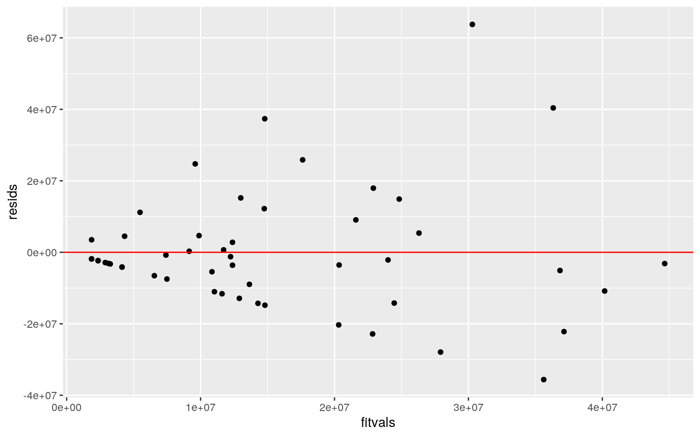
bptest(fit)##
## studentized Breusch-Pagan test
##
## data: fit
## BP = 15.903, df = 3, p-value = 0.001187ggplot()+geom_histogram(aes(resids),bins=20)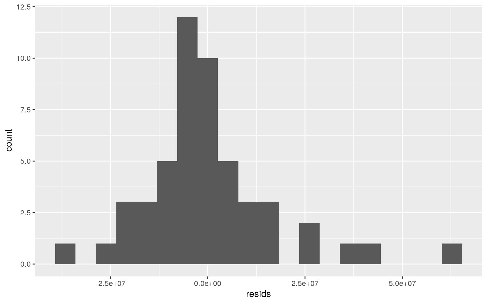 I first ran the model in a simple linear model without interactions to get a general idea of how the data looked. 5.069x10^6 is the predicted value of nuclear energy production when coal and gas are 0. 2.43x10^-1 is the slope for coal on nuclear when holding gas constant. 1.26x10^-1 is the slope of gas on nuclear when holding coal constant. This linear model returned a massive residual standard error of 17960000 on 48 df. I could tell from an initial ggplot that heteroskedasticity was violated. I wanted to check, so I went ahead and did a Breusch-Pagan test, and adjusted.
I reran the model to account for interactions and mean center, as well as violations of assumptions. With interactions, 1.86x10^6 is the predicted value of nuclear energy production when coal and gas are 0. 0.308 is the slope for coal on nuclear when holding gas constant. 0.3012 is the slope of gas on nuclear when holding coal constant. After plotting the residuals, it was clear that homoskedasticity was violated. There were also many outliers that made it clear normality was violated as well. However, the bp test returned a p-value of 0.001187.
- Interpret the coefficient estimates (do not discuss significance) (10)
- Plot the regression using `ggplot()` using geom_smooth(method="lm"). If your interaction is numeric by numeric, refer to code in the slides to make the plot or check out the `interactions` package, which makes this easier. If you have 3 or more predictors, just chose two of them to plot for convenience. (10)
- What proportion of the variation in the outcome does your model explain? (4)
- Check assumptions of linearity, normality, and homoskedasticity either graphically or using a hypothesis test (5)
- Regardless, recompute regression results with robust standard errors via `coeftest(..., vcov=vcovHC(...))`. Discuss significance of results, including any changes from before/after robust SEs if applicable. (10)samp_distn<-replicate(5000, {
boot_dat<-boot_dat<-Project2RawData[sample(nrow(Project2RawData),replace=TRUE),]
fit<-lm(Nuclear ~ Coal_c * Gas_c, data=boot_dat)
coef(fit)
})
samp_distn%>%t%>%as.data.frame%>%summarize_all(sd)## (Intercept) Coal_c Gas_c Coal_c:Gas_c
## 1 2937134 0.1295303 0.1631996 5.733076e-09samp_distn %>% t %>% as.data.frame %>% pivot_longer(1:3) %>% group_by(name) %>%
summarize(lower=quantile(value,.025), upper=quantile(value,.975))## # A tibble: 3 x 3
## name lower upper
## <chr> <dbl> <dbl>
## 1 (Intercept) 11368938. 22688439.
## 2 Coal_c 0.0478 0.548
## 3 Gas_c 0.0950 0.754fit<-lm(Nuclear~Coal_c*Gas_c,data=Project2RawData)
resids<-fit$residuals
fitted<-fit$fitted.values
resid_resamp<-replicate(5000,{
new_resids<-sample(resids,replace=TRUE)
Project2RawData$new_y<-fitted+new_resids
fit<-lm(Nuclear~Coal_c*Gas_c,data=Project2RawData)
coef(fit)
})
resid_resamp%>%t%>%as.data.frame%>%summarize_all(sd)## (Intercept) Coal_c Gas_c Coal_c:Gas_c
## 1 0 0 0 0resid_resamp%>%t%>%as.data.frame%>%pivot_longer(1:3)%>%group_by(name)%>%
summarize(lower=quantile(value,.025), upper=quantile(value,.975))## # A tibble: 3 x 3
## name lower upper
## <chr> <dbl> <dbl>
## 1 (Intercept) 16184881. 16184881.
## 2 Coal_c 0.268 0.268
## 3 Gas_c 0.230 0.230The bootstrapped values returned a big increase in the intercept and coal and gas values compared to the robust values.
5. (30 pts) Fit a logistic regression model predicting a binary variable (if you don’t have one, make/get one) from at least two explanatory variables (interaction not necessary).
data<-Project2RawData%>%mutate(y=ifelse(Region=="Texas",1,0))
head(data)## # A tibble: 6 x 17
## State Abbreviation Region Biomass Geothermal Solar Wind
Hydro HPS Coal Petroleum Gas
## <chr> <chr> <chr> <dbl> <dbl> <dbl> <dbl> <dbl> <dbl>
<dbl> <dbl> <dbl>
## 1 Alab… AL South… 0. 0 0 0 0. 0 0. 0 0.
## 2 Alas… AK Alaska 0. 0 0 0 0. 0 0. 0 0.
## 3 Ariz… AZ West 3.29e6 0 0 0 1.18e7 0 5.57e7 163054.
3.24e7
## 4 Arka… AR South… 4.25e3 0 0 3062. 1.20e6 0 5.67e5
1191884. 3.57e6
## 5 Cali… CA Calif… 1.60e5 0 13759. 9555 6.35e6 169480
3.98e7 67337. 3.49e7
## 6 Colo… CO West 1.48e6 0 0 0 4.20e6 100365 2.51e7 87674.
1.14e7
## # … with 5 more variables: Nuclear <dbl>, Other <dbl>,
Coal_c <dbl>, Gas_c <dbl>, y <dbl>odds<-function(p)p/(1-p)
p<-seq(0,1,by=.1)
cbind(p, odds=odds(p))%>%round(4)## p odds
## [1,] 0.0 0.0000
## [2,] 0.1 0.1111
## [3,] 0.2 0.2500
## [4,] 0.3 0.4286
## [5,] 0.4 0.6667
## [6,] 0.5 1.0000
## [7,] 0.6 1.5000
## [8,] 0.7 2.3333
## [9,] 0.8 4.0000
## [10,] 0.9 9.0000
## [11,] 1.0 Infhead(data)## # A tibble: 6 x 17
## State Abbreviation Region Biomass Geothermal Solar Wind
Hydro HPS Coal Petroleum Gas
## <chr> <chr> <chr> <dbl> <dbl> <dbl> <dbl> <dbl> <dbl>
<dbl> <dbl> <dbl>
## 1 Alab… AL South… 0. 0 0 0 0. 0 0. 0 0.
## 2 Alas… AK Alaska 0. 0 0 0 0. 0 0. 0 0.
## 3 Ariz… AZ West 3.29e6 0 0 0 1.18e7 0 5.57e7 163054.
3.24e7
## 4 Arka… AR South… 4.25e3 0 0 3062. 1.20e6 0 5.67e5
1191884. 3.57e6
## 5 Cali… CA Calif… 1.60e5 0 13759. 9555 6.35e6 169480
3.98e7 67337. 3.49e7
## 6 Colo… CO West 1.48e6 0 0 0 4.20e6 100365 2.51e7 87674.
1.14e7
## # … with 5 more variables: Nuclear <dbl>, Other <dbl>,
Coal_c <dbl>, Gas_c <dbl>, y <dbl>fit<-glm(y~Petroleum+Gas,data=data,family=binomial(link="logit"))
fit##
## Call: glm(formula = y ~ Petroleum + Gas, family =
binomial(link = "logit"),
## data = data)
##
## Coefficients:
## (Intercept) Petroleum Gas
## -1.344e+00 -3.189e-05 -1.133e-06
##
## Degrees of Freedom: 50 Total (i.e. Null); 48 Residual
## Null Deviance: 9.844
## Residual Deviance: 5.787 AIC: 11.79coeftest(fit)##
## z test of coefficients:
##
## Estimate Std. Error z value Pr(>|z|)
## (Intercept) -1.3436e+00 1.3309e+00 -1.0095 0.3127
## Petroleum -3.1887e-05 6.2869e-05 -0.5072 0.6120
## Gas -1.1335e-06 2.8788e-06 -0.3937 0.6938exp(coef(fit))## (Intercept) Petroleum Gas
## 0.2609101 0.9999681 0.9999989exp(-4.96E15)## [1] 0logistic<-function(x){exp(x)/(1+exp(x))}
ggplot()+geom_function(fun=logistic)+xlab("t")+ylab("p(y=1)")+xlim(-10,10)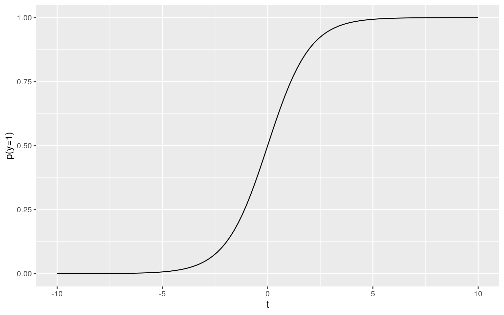
data<-data%>%mutate(petro_cat=ntile(Petroleum,3))
data$petro_cat<-factor(data$petro_cat,labels=c("S","M","L"))
fit1<-glm(y~petro_cat,data=data,family=binomial(link="logit"))
summary(fit1)##
## Call:
## glm(formula = y ~ petro_cat, family = binomial(link =
"logit"),
## data = data)
##
## Deviance Residuals:
## Min 1Q Median 3Q Max
## -0.34821 -0.34821 -0.00003 -0.00003 2.38043
##
## Coefficients:
## Estimate Std. Error z value Pr(>|z|)
## (Intercept) -2.773 1.031 -2.690 0.00715 **
## petro_catM -18.793 7089.908 -0.003 0.99789
## petro_catL -18.793 7089.908 -0.003 0.99789
## ---
## Signif. codes: 0 '***' 0.001 '**' 0.01 '*' 0.05 '.' 0.1
' ' 1
##
## (Dispersion parameter for binomial family taken to be 1)
##
## Null deviance: 9.8439 on 50 degrees of freedom
## Residual deviance: 7.6064 on 48 degrees of freedom
## AIC: 13.606
##
## Number of Fisher Scoring iterations: 20exp(-18.793)## [1] 6.891342e-09exp(-18.793)## [1] 6.891342e-09info<-table(truth=data$y,prediction=data$petro_cat)%>%addmargins
info## prediction
## truth S M L Sum
## 0 16 17 17 50
## 1 1 0 0 1
## Sum 17 17 17 51(16)/51## [1] 0.3137255(17)/50## [1] 0.34(16/17)## [1] 0.9411765exp(coef(fit1))## (Intercept) petro_catM petro_catL
## 6.250000e-02 6.888036e-09 6.888036e-09coef(fit1)%>%round(5)%>%data.frame## .
## (Intercept) -2.77259
## petro_catM -18.79348
## petro_catL -18.79348exp(-2.773)## [1] 0.0624743odds2prob<-function(odds){odds/(1+odds)}
odds2prob(0.06247)## [1] 0.05879695exp(-1.879)## [1] 0.1527428probs<-predict(fit1,type="response")
table(predict=as.numeric(probs>0.5),truth=data$y)%>%addmargins## truth
## predict 0 1 Sum
## 0 50 1 51
## Sum 50 1 51hist(table(predict=as.numeric(probs>0.5),truth=data$y)%>%addmargins
)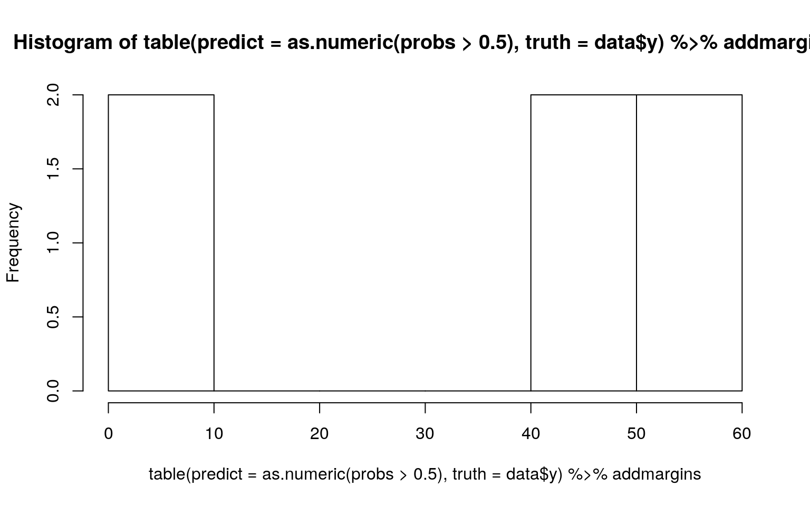
model.df=augment(fit1)%>%rename(log_odds='.fitted',)
glimpse(model.df)## Rows: 51
## Columns: 8
## $ y <dbl> 0, 0, 0, 0, 0, 0, 0, 0, 0, 0, 0, 0, 0, 0, 0,
0, 0, 0, 0, 0, 0, 0, 0, 0, 0, 0, …
## $ petro_cat <fct> S, S, M, L, M, M, L, S, M, M, S, L, L,
L, S, M, M, M, M, L, L, L, M, L, L, M, …
## $ log_odds <dbl> -2.772589, -2.772589, -21.566069,
-21.566069, -21.566069, -21.566069, -21.5660…
## $ .resid <dbl> -3.482086e-01, -3.482086e-01,
-2.934288e-05, -2.934288e-05, -2.934288e-05, -2.…
## $ .std.resid <dbl> -3.589252e-01, -3.589252e-01,
-3.024595e-05, -3.024595e-05, -3.024595e-05, -3.…
## $ .hat <dbl> 0.05882353, 0.05882353, 0.05882353,
0.05882353, 0.05882353, 0.05882353, 0.0588…
## $ .sigma <dbl> 0.3988704, 0.3988704, 0.4022917,
0.4022917, 0.4022917, 0.4022917, 0.4022917, 0…
## $ .cooksd <dbl> 1.383464e-03, 1.383464e-03,
9.529347e-12, 9.529347e-12, 9.529347e-12, 9.529347…ggplot(model.df,aes(y,log_odds,colour=y))+geom_line()+geom_smooth(se=TRUE)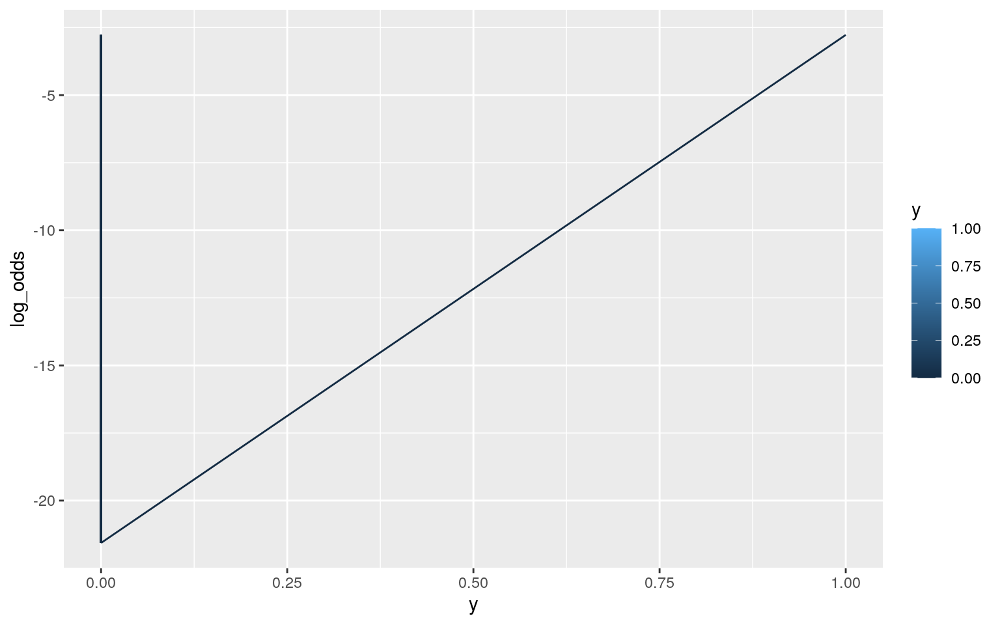
model.df## # A tibble: 51 x 8
## y petro_cat log_odds .resid .std.resid .hat .sigma
.cooksd
## <dbl> <fct> <dbl> <dbl> <dbl> <dbl> <dbl> <dbl>
## 1 0 S -2.77 -0.348 -0.359 0.0588 0.399 1.38e- 3
## 2 0 S -2.77 -0.348 -0.359 0.0588 0.399 1.38e- 3
## 3 0 M -21.6 -0.0000293 -0.0000302 0.0588 0.402 9.53e-12
## 4 0 L -21.6 -0.0000293 -0.0000302 0.0588 0.402 9.53e-12
## 5 0 M -21.6 -0.0000293 -0.0000302 0.0588 0.402 9.53e-12
## 6 0 M -21.6 -0.0000293 -0.0000302 0.0588 0.402 9.53e-12
## 7 0 L -21.6 -0.0000293 -0.0000302 0.0588 0.402 9.53e-12
## 8 0 S -2.77 -0.348 -0.359 0.0588 0.399 1.38e- 3
## 9 0 M -21.6 -0.0000293 -0.0000302 0.0588 0.402 9.53e-12
## 10 0 M -21.6 -0.0000293 -0.0000302 0.0588 0.402 9.53e-12
## # … with 41 more rowsggplot(model.df, aes(x=log_odds , y=model.df$y )) +
geom_point() + stat_smooth(method="glm", se=FALSE, method.args = list(family=binomial)) + facet_wrap( ~ petro_cat)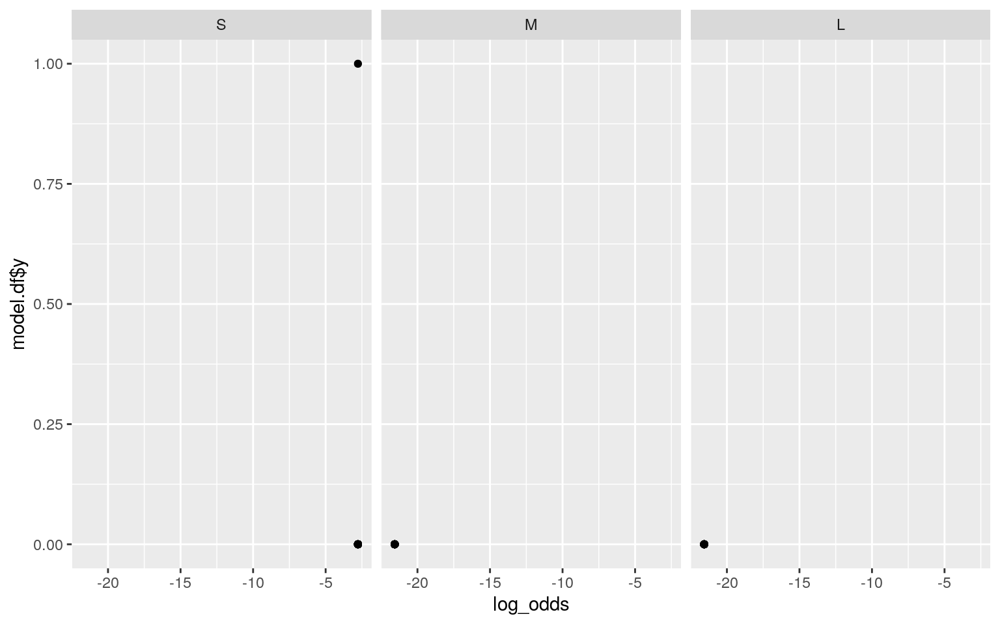
mean(data[data$y==1,]$prob>.1)## [1] NaNmean(data[data$y==1,]$prob<.1)## [1] NaNlogit<-glm(y~petro_cat,data=data,family=binomial(link="logit"))
logit##
## Call: glm(formula = y ~ petro_cat, family =
binomial(link = "logit"),
## data = data)
##
## Coefficients:
## (Intercept) petro_catM petro_catL
## -2.773 -18.793 -18.793
##
## Degrees of Freedom: 50 Total (i.e. Null); 48 Residual
## Null Deviance: 9.844
## Residual Deviance: 7.606 AIC: 13.61exp(coef(fit))## (Intercept) Petroleum Gas
## 0.2609101 0.9999681 0.9999989exp(cbind(coef(fit),confint(fit)))## 2.5 % 97.5 %
## (Intercept) 0.2609101 0.009672107 2.7885066
## Petroleum 0.9999681 0.999711551 1.0000073
## Gas 0.9999989 NA 0.9999995Petroleum energy production increases the log odds of the region being Texas. For petroleum = 0, the log odds is -4.96x10^15, odds of region being Texas is e-4.96x1015, or ~0. For petroleum production = 1, the log odds is -4.96x10^15 + 5.237x10^8, or still roughly 0. Every one unit increase in petroleum energy production (note that 1 unit is incredibly small when dealing with this kind of variable) causes odds to multiply by 1424379. I reran this model dividing petroleum into 3 categorial levels. The model was more successful this way. Odds of region being Texas for M are 6.89x10^9 times that of S. Odds of region being Texas for M are 6.89x10^9 times that of M.
Accuracy of the second model was 0.314. Specificity was 1.0. Sensitivity was 0.34. Precision was 0.941. The logit score was 0.1527.
6. (25 pts) Perform a logistic regression predicting the same binary response variable from ALL of the rest of your variables (the more, the better!)
lambda.1se). Discuss which variables are retained. (5)fit3<-glm(y~Biomass+Geothermal+Solar+Wind+Hydro+HPS+Coal+Petroleum+Gas+Other,data=data,family="binomial")
coeftest(fit3)##
## z test of coefficients:
##
## Estimate Std. Error z value Pr(>|z|)
## (Intercept) -1.9095e+01 5.9620e+03 -0.0032 0.9974
## Biomass -3.5143e-04 1.0484e-01 -0.0034 0.9973
## Geothermal 1.2420e-04 1.8901e-01 0.0007 0.9995
## Solar -9.8758e-04 2.0338e+00 -0.0005 0.9996
## Wind 2.2767e-05 1.2347e-02 0.0018 0.9985
## Hydro 6.2786e-06 1.6816e-03 0.0037 0.9970
## HPS -4.5733e-04 2.3106e-01 -0.0020 0.9984
## Coal -2.7282e-06 1.7252e-03 -0.0016 0.9987
## Petroleum -9.8639e-05 5.2148e-02 -0.0019 0.9985
## Gas -1.8842e-06 3.4884e-03 -0.0005 0.9996
## Other 4.3902e-04 1.2948e-01 0.0034 0.9973prob3<-predict(fit3,type="response")
pred<-ifelse(prob3>.5,1,0)
exp(coef(fit3))%>%round(3)%>%t## (Intercept) Biomass Geothermal Solar Wind Hydro HPS Coal
Petroleum Gas Other
## [1,] 0 1 1 0.999 1 1 1 1 1 1 1class_diag <- function(probs,truth){
tab<-table(factor(probs>.5,levels=c("FALSE","TRUE")),truth)
acc=sum(diag(tab))/sum(tab)
sens=tab[2,2]/colSums(tab)[2]
spec=tab[1,1]/colSums(tab)[1]
ppv=tab[2,2]/rowSums(tab)[2]
f1=2*(sens*ppv)/(sens+ppv)
if(is.numeric(truth)==FALSE & is.logical(truth)==FALSE) truth<-as.numeric(truth)-1
ord<-order(probs, decreasing=TRUE)
probs <- probs[ord]; truth <- truth[ord]
TPR=cumsum(truth)/max(1,sum(truth))
FPR=cumsum(!truth)/max(1,sum(!truth))
dup<-c(probs[-1]>=probs[-length(probs)], FALSE)
TPR<-c(0,TPR[!dup],1); FPR<-c(0,FPR[!dup],1)
n <- length(TPR)
auc<- sum( ((TPR[-1]+TPR[-n])/2) * (FPR[-1]-FPR[-n]) )
data.frame(acc,sens,spec,ppv,f1,auc)
}
finaldat<-data%>%select(-State,-Abbreviation,-Region,-petro_cat)
head(finaldat)## # A tibble: 6 x 14
## Biomass Geothermal Solar Wind Hydro HPS Coal Petroleum
Gas Nuclear Other Coal_c
## <dbl> <dbl> <dbl> <dbl> <dbl> <dbl> <dbl> <dbl> <dbl>
<dbl> <dbl> <dbl>
## 1 0. 0 0 0 0. 0 0. 0 0. 0. 0 -3.30e7
## 2 0. 0 0 0 0. 0 0. 0 0. 0. 0 -3.30e7
## 3 3.29e6 0 0 0 1.18e7 0 5.57e7 163054. 3.24e7 3.97e7
7137. 2.26e7
## 4 4.25e3 0 0 3062. 1.20e6 0 5.67e5 1191884. 3.57e6 0. 0
-3.25e7
## 5 1.60e5 0 13759. 9555 6.35e6 169480 3.98e7 67337.
3.49e7 3.07e7 534. 6.76e6
## 6 1.48e6 0 0 0 4.20e6 100365 2.51e7 87674. 1.14e7 1.52e7
24019. -7.95e6
## # … with 2 more variables: Gas_c <dbl>, y <dbl>fit<-glm(y~(.)^2,data=finaldat,family="binomial")
prob<-predict(fit,type="response")
class_diag(prob,finaldat$y)## acc sens spec ppv f1 auc
## 1 1 1 1 1 1 1set.seed(1234)
first_half<-finaldat%>%sample_frac(0.5)
second_half<-anti_join(finaldat,first_half)
fit<-glm(y~(.)^2,data=first_half,family="binomial")
probs1<-predict(fit,newdata=second_half,type="response")
truth1<-second_half$y
table(prediction=as.numeric(probs1>.5),truth1)## truth1
## prediction 0
## 0 12
## 1 13fit<-glm(y~(.)^2,data=second_half,family="binomial")
probs2<-predict(fit,newdata=first_half,type="response")
truth2<-first_half$y
table(prediction=as.numeric(probs2>.5),truth2)## truth2
## prediction 0 1
## 0 25 1class_diag(probs2,truth2)## acc sens spec ppv f1 auc
## 1 0.9615385 0 1 NaN NaN 0.6set.seed(1234)
k=10
donedat<-finaldat%>%sample_frac
donedat## # A tibble: 51 x 14
## Biomass Geothermal Solar Wind Hydro HPS Coal Petroleum
Gas Nuclear Other Coal_c
## <dbl> <dbl> <dbl> <dbl> <dbl> <dbl> <dbl> <dbl> <dbl>
<dbl> <dbl> <dbl>
## 1 5.69e4 0 0 4.99e5 1.91e6 566713 7.18e7 86777. 3.40e6
1.02e7 2.74e4 3.88e7
## 2 7.53e5 0 0 2.76e6 1.61e5 0 9.09e7 110882. 4.36e6
9.41e7 6.43e4 5.79e7
## 3 3.64e6 0 0 2.60e5 4.59e6 0 7.24e4 480670. 7.48e6 0.
3.52e5 -3.30e7
## 4 8.45e3 0 0 2.76e6 1.48e6 0 2.98e7 48076. 7.57e2 0.
8.38e2 -3.21e6
## 5 5.77e3 0 0 3.92e5 4.32e6 0 3.19e6 10089. 1.22e5 0.
3.13e4 -2.98e7
## 6 7.54e5 0 0 0. 6.23e5 5385 2.45e6 288349. 9.68e6
1.67e7 7.13e5 -3.06e7
## 7 1.60e5 0 13759. 9.56e3 6.35e6 169480 3.98e7 67337.
3.49e7 3.07e7 5.34e2 6.76e6
## 8 6.00e5 0 0 1.55e4 4.98e5 0 1.14e8 1311952. 4.75e6
1.49e7 1.44e4 8.08e7
## 9 1.44e6 0 0 3.54e6 7.39e7 52383 7.48e6 47275. 1.14e7
6.63e6 6.37e4 -2.55e7
## 10 4.25e3 0 0 3.06e3 1.20e6 0 5.67e5 1191884. 3.57e6 0.
0. -3.25e7
## # … with 41 more rows, and 2 more variables: Gas_c
<dbl>, y <dbl>folds<-ntile(1:nrow(finaldat),n=10)
probl<-predict(fit,type="response")
class_diag(prob,donedat$y)## acc sens spec ppv f1 auc
## 1 0.9607843 0 0.98 0 NaN 0.52lastdat<-donedat%>%sample_frac
folds<-ntile(1:nrow(data),n=10)
diags<-NULL
library(glmnet)
y<-as.matrix(data$y)
y## [,1]
## [1,] 0
## [2,] 0
## [3,] 0
## [4,] 0
## [5,] 0
## [6,] 0
## [7,] 0
## [8,] 0
## [9,] 0
## [10,] 0
## [11,] 0
## [12,] 0
## [13,] 0
## [14,] 0
## [15,] 0
## [16,] 0
## [17,] 0
## [18,] 0
## [19,] 0
## [20,] 0
## [21,] 0
## [22,] 0
## [23,] 0
## [24,] 0
## [25,] 0
## [26,] 0
## [27,] 0
## [28,] 0
## [29,] 0
## [30,] 0
## [31,] 0
## [32,] 0
## [33,] 0
## [34,] 0
## [35,] 0
## [36,] 0
## [37,] 0
## [38,] 0
## [39,] 0
## [40,] 0
## [41,] 0
## [42,] 0
## [43,] 0
## [44,] 1
## [45,] 0
## [46,] 0
## [47,] 0
## [48,] 0
## [49,] 0
## [50,] 0
## [51,] 0x<-model.matrix(Region~.,data=data)[,-1]
head(x)## StateAlaska StateArizona StateArkansas StateCalifornia
StateColorado StateConnecticut
## 1 0 0 0 0 0 0
## 2 1 0 0 0 0 0
## 3 0 1 0 0 0 0
## 4 0 0 1 0 0 0
## 5 0 0 0 1 0 0
## 6 0 0 0 0 1 0
## StateDelaware StateDistrict of Columbia StateFlorida
StateGeorgia StateHawaii StateIdaho
## 1 0 0 0 0 0 0
## 2 0 0 0 0 0 0
## 3 0 0 0 0 0 0
## 4 0 0 0 0 0 0
## 5 0 0 0 0 0 0
## 6 0 0 0 0 0 0
## StateIllinois StateIndiana StateIowa StateKansas
StateKentucky StateLouisiana StateMaine
## 1 0 0 0 0 0 0 0
## 2 0 0 0 0 0 0 0
## 3 0 0 0 0 0 0 0
## 4 0 0 0 0 0 0 0
## 5 0 0 0 0 0 0 0
## 6 0 0 0 0 0 0 0
## StateMaryland StateMassachusetts StateMichigan
StateMinnesota StateMississippi StateMissouri
## 1 0 0 0 0 0 0
## 2 0 0 0 0 0 0
## 3 0 0 0 0 0 0
## 4 0 0 0 0 0 0
## 5 0 0 0 0 0 0
## 6 0 0 0 0 0 0
## StateMontana StateNebraska StateNevada StateNew
Hampshire StateNew Jersey StateNew Mexico
## 1 0 0 0 0 0 0
## 2 0 0 0 0 0 0
## 3 0 0 0 0 0 0
## 4 0 0 0 0 0 0
## 5 0 0 0 0 0 0
## 6 0 0 0 0 0 0
## StateNew York StateNorth Carolina StateNorth Dakota
StateOhio StateOklahoma StateOregon
## 1 0 0 0 0 0 0
## 2 0 0 0 0 0 0
## 3 0 0 0 0 0 0
## 4 0 0 0 0 0 0
## 5 0 0 0 0 0 0
## 6 0 0 0 0 0 0
## StatePennsylvania StateRhode Island StateSouth Carolina
StateSouth Dakota StateTennessee
## 1 0 0 0 0 0
## 2 0 0 0 0 0
## 3 0 0 0 0 0
## 4 0 0 0 0 0
## 5 0 0 0 0 0
## 6 0 0 0 0 0
## StateTexas StateUtah StateVermont StateVirginia
StateWashington StateWest Virginia StateWisconsin
## 1 0 0 0 0 0 0 0
## 2 0 0 0 0 0 0 0
## 3 0 0 0 0 0 0 0
## 4 0 0 0 0 0 0 0
## 5 0 0 0 0 0 0 0
## 6 0 0 0 0 0 0 0
## StateWyoming AbbreviationAL AbbreviationAR
AbbreviationAZ AbbreviationCA AbbreviationCO
## 1 0 1 0 0 0 0
## 2 0 0 0 0 0 0
## 3 0 0 0 1 0 0
## 4 0 0 1 0 0 0
## 5 0 0 0 0 1 0
## 6 0 0 0 0 0 1
## AbbreviationCT AbbreviationDC AbbreviationDE
AbbreviationFL AbbreviationGA AbbreviationHI
## 1 0 0 0 0 0 0
## 2 0 0 0 0 0 0
## 3 0 0 0 0 0 0
## 4 0 0 0 0 0 0
## 5 0 0 0 0 0 0
## 6 0 0 0 0 0 0
## AbbreviationIA AbbreviationID AbbreviationIL
AbbreviationIN AbbreviationKS AbbreviationKY
## 1 0 0 0 0 0 0
## 2 0 0 0 0 0 0
## 3 0 0 0 0 0 0
## 4 0 0 0 0 0 0
## 5 0 0 0 0 0 0
## 6 0 0 0 0 0 0
## AbbreviationLA AbbreviationMA AbbreviationMD
AbbreviationME AbbreviationMI AbbreviationMN
## 1 0 0 0 0 0 0
## 2 0 0 0 0 0 0
## 3 0 0 0 0 0 0
## 4 0 0 0 0 0 0
## 5 0 0 0 0 0 0
## 6 0 0 0 0 0 0
## AbbreviationMO AbbreviationMS AbbreviationMT
AbbreviationNC AbbreviationND AbbreviationNE
## 1 0 0 0 0 0 0
## 2 0 0 0 0 0 0
## 3 0 0 0 0 0 0
## 4 0 0 0 0 0 0
## 5 0 0 0 0 0 0
## 6 0 0 0 0 0 0
## AbbreviationNH AbbreviationNJ AbbreviationNM
AbbreviationNV AbbreviationNY AbbreviationOH
## 1 0 0 0 0 0 0
## 2 0 0 0 0 0 0
## 3 0 0 0 0 0 0
## 4 0 0 0 0 0 0
## 5 0 0 0 0 0 0
## 6 0 0 0 0 0 0
## AbbreviationOK AbbreviationOR AbbreviationPA
AbbreviationRI AbbreviationSC AbbreviationSD
## 1 0 0 0 0 0 0
## 2 0 0 0 0 0 0
## 3 0 0 0 0 0 0
## 4 0 0 0 0 0 0
## 5 0 0 0 0 0 0
## 6 0 0 0 0 0 0
## AbbreviationTN AbbreviationTX AbbreviationUT
AbbreviationVA AbbreviationVT AbbreviationWA
## 1 0 0 0 0 0 0
## 2 0 0 0 0 0 0
## 3 0 0 0 0 0 0
## 4 0 0 0 0 0 0
## 5 0 0 0 0 0 0
## 6 0 0 0 0 0 0
## AbbreviationWI AbbreviationWV AbbreviationWY Biomass
Geothermal Solar Wind Hydro
## 1 0 0 0 0.000 0 0.00 0.000 0
## 2 0 0 0 0.000 0 0.00 0.000 0
## 3 0 0 0 3291195.898 0 0.00 0.000 11753493
## 4 0 0 0 4254.745 0 0.00 3062.442 1204550
## 5 0 0 0 159645.589 0 13759.44 9555.000 6348463
## 6 0 0 0 1478309.688 0 0.00 0.000 4195168
## HPS Coal Petroleum Gas Nuclear Other Coal_c Gas_c y
petro_catM
## 1 0 0 0.00 0 0 0.000 -33027407 -18130807 0 0
## 2 0 0 0.00 0 0 0.000 -33027407 -18130807 0 0
## 3 0 55659872 163054.22 32369863 39716204 7136.532
22632465 14239055 0 1
## 4 0 566822 1191884.18 3571101 0 0.000 -32460585
-14559707 0 0
## 5 169480 39783826 67337.47 34852150 30661851 533.921
6756419 16721342 0 1
## 6 100365 25075250 87673.59 11368417 15169966 24018.741
-7952157 -6762390 0 1
## petro_catL
## 1 0
## 2 0
## 3 0
## 4 1
## 5 0
## 6 0x<-scale(x)The auc was quite high at 0.98, meaning that Texas region is being predicted fairly accurately. Acc and spec were quite high as well, while sense and ppv were low.
You can choose ANY datasets you want that meet the above criteria for variables and observations. You can make it as serious as you want, or not, but keep in mind that you will be incorporating this project into a portfolio webpage for your final in this course, so choose something that really reflects who you are, or something that you feel will advance you in the direction you hope to move career-wise, or something that you think is really neat, or whatever. On the flip side, regardless of what you pick, you will be performing all the same tasks, so it doesn’t end up being that big of a deal.
If you are totally clueless and have no direction at all, log into the server and type
data(package = .packages(all.available = TRUE))This will print out a list of ALL datasets in ALL packages installed on the server (a ton)! Scroll until your eyes bleed! Actually, do not scroll that much… To start with something more manageable, just run the command on your own computer, or just run data() to bring up the datasets in your current environment. To read more about a dataset, do ?packagename::datasetname.
If it is easier for you, and in case you don’t have many packages installed, a list of R datasets from a few common packages (also downloadable in CSV format) is given at the following website: https://vincentarelbundock.github.io/Rdatasets/datasets.html.
A good package to download for fun/relevant data is fivethiryeight.
Run install.packages("fivethirtyeight"), load the packages with library(fivethirtyeight), run data(), and then scroll down to view the datasets. Here is an online list of all 127 datasets (with links to the 538 articles). Lots of sports, politics, current events, etc.
If you have already started to specialize (e.g., ecology, epidemiology) you might look at discipline-specific R packages (vegan, epi, respectively). We will be using some tools from these packages later in the course, but they come with lots of data too, which you can explore according to the directions above
However, you emphatically DO NOT have to use datasets available via R packages! In fact, I would much prefer it if you found the data from completely separate sources and brought them together (a much more realistic experience in the real world)! You can even reuse data from your SDS328M project, provided it shares a variable in common with other data which allows you to merge the two together (e.g., if you still had the timestamp, you could look up the weather that day: https://www.wunderground.com/history/). If you work in a research lab or have access to old data, you could potentially merge it with new data from your lab!
Here is a curated list of interesting datasets (read-only spreadsheet format): https://docs.google.com/spreadsheets/d/1wZhPLMCHKJvwOkP4juclhjFgqIY8fQFMemwKL2c64vk/edit
Here is another great compilation of datasets: https://github.com/rfordatascience/tidytuesday
Here is the UCI Machine Learning Repository: https://archive.ics.uci.edu/ml/index.php
Here is another good general place to look: https://www.kaggle.com/datasets
To help narrow your search down or to see interesting variable ideas, check out https://www.tylervigen.com/spurious-correlations. This is the spurious correlations website, and it is fun, but if you look at the bottom of each plot you will see sources for the data. This is a good place to find very general data (or at least get a sense of where you can scrape data together from)!
If you are interested in medical data, check out www.countyhealthrankings.org
If you are interested in scraping UT data, they make loads of data public (e.g., beyond just professor CVs and syllabi). Check out all the data that is available in the statistical handbooks: https://reports.utexas.edu/statistical-handbook
Data.gov 186,000+ datasets!
Social Explorer is a nice interface to Census and American Community Survey data (more user-friendly than the government sites). May need to sign up for a free trial.
U.S. Bureau of Labor Statistics
Gapminder, data about the world.
…